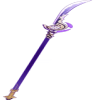
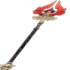
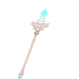
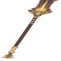

|  |
Luz do Cortador de Grama |
45.94 |
608.07 |
Bonus ER% |
12.0% |
55.13% |
O ATQ é aumentado em 28-56% da Recarga de Energia acima da base de 100%. Você pode receber um Bônus máximo de 80-120% de ATQ. Ganha 30-50% de Recarga de Energia por 12s depois de usar um Supremo. |
|  |
Báculo de Homa |
45.94 |
608.07 |
Bonus CritDMG% |
14.4% |
66.15% |
Aumenta a Vida em 20-40%. Além disso, o Personagem que equipar esta arma terá um Bônus de ATQ de 0.8-1.6% com base na Vida Máxima. Quando a Vida do Personagem que equipar essa arma cair para abaixo de 50%, seu ATQ aumentará 1-1.8% com base em sua Vida Máxima. |
|  |
Espinha Celestial |
47.54 |
674.33 |
Bonus ER% |
8.0% |
36.75% |
A Taxa Crítica aumenta 8-12%,a VEL do Ataque Normal aumenta 12%.Além disso, o Ataque Normal e Carregado possuem 50% de chance de criar uma Lâmina que causa 40-100% Dano de ATQ adicional em uma área |
|  |
Báculo das Areias Escarlates |
44.34 |
541.83 |
Bonus CritRate% |
9.6% |
44.1% |
Obtém Bônus de ATQ baseado em 52-104% da Proficiência Elemental do personagem que está com essa arma equipada. Quando a Habilidade Elemental atinge um inimigo, gera por 10s o efeito "Sonhos de Areias Escarlates": obtém Bônus de ATQ baseado em 28-56% da Proficiência Elemental do personagem que está com essa arma equipada. Esse efeito pode ser acumulado até 3 vezes. |